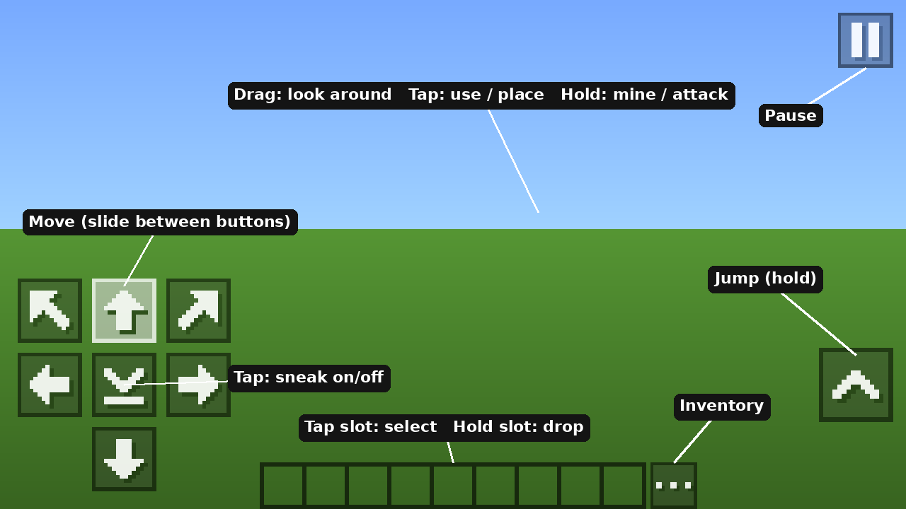

mcport turns your own copy of the Alpha 1.1.2_01 desktop jar into an Android APK — no launcher, no Java VM on the phone. Pocket Edition style touch controls, sound, the game's original screens tuned for fingers. mcport 把你自己的 Alpha 1.1.2_01 電腦版 jar 打包成 Android APK，不需要啟動器，手機上也不用跑 Java 虛擬機。觸控仿 Pocket Edition，介面保留原版並針對手指操作優化。

Game bytecode becomes Android dex. Rendering goes through EGL + OpenGL ES 1.1 — no emulator, no launcher.遊戲位元碼轉成 Android dex，畫面用 EGL + OpenGL ES 1.1 繪製，不靠模擬器或啟動器。
D-pad, jump, sneak toggle, tap a creature on screen to hit it (like PE), tap elsewhere to use or place, hold to mine, tap the hotbar to switch, hold it to drop.十字鍵、跳躍、蹲下切換、手指點到生物就攻擊（同 PE）、點其他地方使用或放置、按住挖掘、點熱鍵列切換、按住丟棄。
Taps count on release, long-press is a right click, tapping a crafting cell while holding items places one, taps snap to slots, near misses never drop a stack.放開才算點擊、長按＝右鍵、拿著材料點合成格只放 1 個、自動對準格子、不會誤丟整疊。
The phone keyboard pops up for chat, signs and server addresses, and hides again afterwards.聊天、告示牌、伺服器位址時自動跳出手機鍵盤，離開後收起。
A software OpenAL mixer: 3D position, distance, stereo panning, pitch and streamed music. Sound files come from your own launcher install.軟體 OpenAL 混音器：立體位置、距離衰減、左右聲道、音高與音樂串流。音效檔來自你自己的啟動器。
No more random "Comparison method violates its general contract!" crashes, and no doubled buttons after the Controls screen.不再隨機出現「Comparison method violates its general contract!」當機，Controls 回來後按鈕也不再重複。
The same layer runs on desktop OpenGL with scripted input and screenshots, so changes can be checked without a phone.同一套轉接層可以接電腦的 OpenGL，用腳本操作並截圖，不用手機也能驗證。
The game's code itself is untouched. GL 1.1 features missing on phones — display lists, quads, matrix queries — are emulated on OpenGL ES 1.1.
遊戲本身的程式不會被修改。手機上沒有的 GL 1.1 功能（display list、四邊形、矩陣查詢）由轉接層用 OpenGL ES 1.1 模擬。
sudo apt update
sudo apt install openjdk-21-jdk android-sdk-platform-23 dalvik-exchange \
aapt zipalign apksigner libasm-java python3
.minecraft/versions/a1.1.2_01/a1.1.2_01.jar.
git clone https://github.com/OWNER/mcport.git
cd mcport
./build-apk.sh ~/a1.1.2_01.jar minecraft-alpha.apk ~/.minecraft
The last argument adds sound: launch Alpha once with the official launcher so it downloads the old sound files, then pass your .minecraft folder. Leave it out for a silent build.
最後一個參數會加入音效：先用官方啟動器啟動一次 Alpha 讓它下載舊版音效，再把 .minecraft 資料夾傳進來。省略的話就沒有聲音。
build/ folder: its signing key is needed to update the app later without losing your worlds.
把 APK 傳到手機安裝（Android 5.0 以上）。請保留 build/ 資料夾，裡面的簽名金鑰之後更新 App 要用，否則必須移除重裝，存檔會不見。